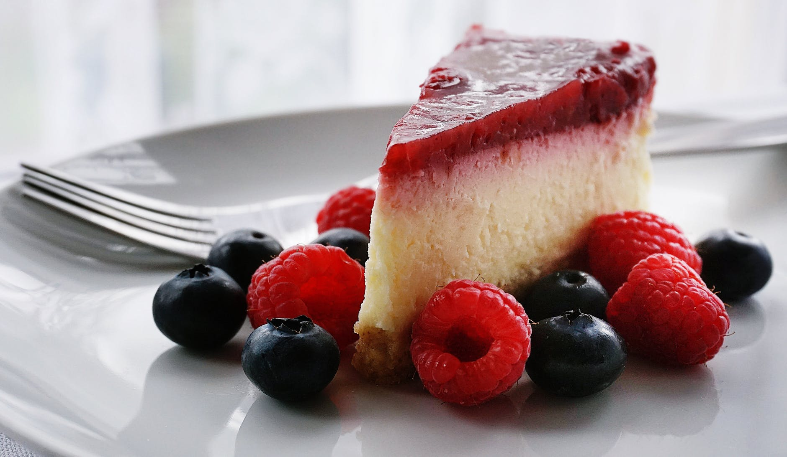

Cheesecake
Cea mai simplă rețetă
Majoritatea oamenilor preferă să mănânce ceva gustos, însă de cele mai multe ori obosim să stăm și să gătim ziua întreagă. La această problemă există o mare alternativă și anume rețetele cu o pregătire simplă, rapidă, dar și gustoasă. Această este o bună scăpare atunci când avem o sărbătoare. Astfel, astăzi vă propunem să gătim cel mai delicios Cheesecake.


| Timp pregătire |
Categorie |
Bucătărie |
Servire |
Calorii |
| 40 minute |
Desert |
Americană |
16 porții |
476 kcal |
Ingrediente:
Pentru blat
- 400 g biscuiți
- 150 g unt topit
Pentru cremă
- 600 gr cremă brânză
- 500 ml frișcă
- 150 gr zahăr pudră
- 100 ml apă
- 100 ml lapte
- 20 g gelatină
- Pachet vanilie
Pentru jeleu
- 300 g căpșuni
- 100 ml apă
- 3 linguri zahăr
- 10 g gelatină
Să începem!!
MOD DE PREPARARE
- Rupe biscuiții bucățele în bolul unui blender, adaugă untul topit, zahărul și mixează totul până se mărunțesc biscuiții, iar textura se aseamănă cu cea a nisipului umed. Pune amestecul obținut într-o tavă de circa 21-22 cm. cu fund detaşabil, presează-l bine atât la margini cât și pe fundul tavei apoi pune-o la cuptorul preîncălzit la 200 de grade C pentru 8 minute după care scoate-o din cuptor și las-o să se răcească.
- Între timp pune brânza într-un blender și mixeaz-o bine circa 8-10 minute până devine fină. Sparge treptat ouăle. Scoate capacul și adaugă zahărul, făina, puțină sare, pune capacul și mixează până se încorporează tot.
- Apoi toarnă smântâna dulce continuând să mixezi.
- La capăt scoate capacul, toarnă esența de vanilie și răzuiește coaja de la o lămâie. Amestecă puțin cu lingura și toarnă compoziția de brânză peste crusta de biscuiți pregătită mai devreme.
- Coace cheesecake-ul la cuptorul preîncălzit la 150 de grade C circa o oră și 20 de minute.
- Scoate cheesecake-ul din cuptor, mijlocul ar trebui să fie un pic moale, iar deasupra puțin rumenit, lasă-l să se răcească în tavă 3-4 ore. Servește-l cu gem, dulceață, fructe proaspete sau pur și simplu pudrat cu zahăr.
Vă dorim poftă mare! Pentru mai multe rețete vă așteptăm pe canalul nostru de YouTube ValeriesFOOD .
Mai jos vă invităm să accesați rețete asemănătoare la fel de simple și dulci
Pentru a accesa rețeta faceți click pe poză